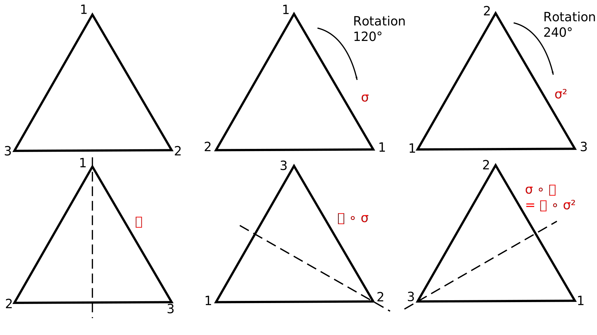

1 Lecture 1
1.1 Motivation
Groups are the abstractions of symmetries, a unified way to investigate symmetries.
1.2 Basic Definitions and Examples
A binary operation, *, on a set \(X\) is a way of combining two elements of \(X\) to unambiguously give another element of \(X\), i.e. \(*: X \times X \to X\).
Definition 1.1 If \(G\) is a set and \(*\) is a binary operation on \(G\) then \((G, *)\) is a group if the following four axioms hold:
- \(x, y \in G \implies x * y \in G\) (closure)
- \(\exists\) an element \(e \in G \text{ satisfying } x * e = x = e * x\) (existence of an identity)
- for every \(x \in G\) there is a \(y \in G\) s.t. \(x * y = e = y * x\) (existence of inverses)
- for every \(x, y, z \in G\), \(x * (y * z) = (x * y) * z\) (the associative law)
Remark. \(e\) is called the identity of \(G\) - see @ref{lem:one} for why it is unique. We will show in @ref{lem:one} that inverses are unique and we will write \(x^{-1}\) for the inverse of \(x\).
Example 1.1 \((\mathbb{Z}, +)\), \(e = 0\), \(x^{-1} = -x\)
Example 1.2 \((\mathbb{Q}, +)\), \((\mathbb{R}, +)\)
Example 1.3 \((\mathbb{Q} \setminus \{ 0 \}, *)\)
Non Example 1.1 \((\mathbb{Z}, -)\) - associativity fails
Non Example 1.2 \((\mathbb{Z}, *)\) - no inverses
Non Example 1.3 \((\mathbb{Q}, *)\) - \(0^{-1}\) does not exist
These have all had an infinite number of elements, so onto some finite groups.
Example 1.4 (The trivial group) \((e, *)\)
Example 1.5 \((\{\pm 1\}, \times)\). A nice way to look at a group is to look at a multiplication table.
\[\begin{array}{c|cc} \times & 1 & -1 \\ \hline 1 & 1 & -1 \\ -1 & -1 & 1 \end{array}\]We can see \(e = 1\) and \((-1)^{-1} = -1\)
Example 1.6 \((\{0, 1, 2\}, +_3)\). \(+_3\) is addition modulo 3.
\[\begin{array}{c|ccc} +_3 & 0 & 1 & 2 \\ \hline 0 & 0 & 1 & 2\\ 1 & 1 & 2 & 0 \\ 2 & 2 & 0 & 1 \end{array}\]We can see \(e = 0\) and \(1^{-1} = 2\)
Example 1.7 \((\{e, a, b, c\}, *)\)
\[\begin{array}{c|cccc} * & e & a & b & c \\ \hline e & e & a & b & c \\ a & a & e & c & b \\ b & b & c & e & a \\ c & c & b & a & e \end{array}\]You may notice in any row no element is repeated, this is due to the cancellation law (bottom of page).
```
Example 1.8 Rotations and reflections of an equilateral triangle.

operation \(\circ =\) do right transformation then left transformation
Claim: This defines a group with 6 elements
Example 1.9 \[\begin{align*} M_2(\mathbb{R}) &= \{ 2 \times 2 \text{ matrices with entries in } \mathbb{R} \} \\ &= \left[ \begin{pmatrix} a & b \\ c & d \end{pmatrix} : a, b, c, d \in \mathbb{R} \right] \\ \text{under addition} \\ \begin{pmatrix} a & b \\ c & d \end{pmatrix} + \begin{pmatrix} \alpha & \beta \\ \gamma & \delta \end{pmatrix} &= \begin{pmatrix} a + \alpha & b + \beta \\ c + \gamma & d + \delta \end{pmatrix} \end{align*}\]
A more interesting example is
Example 1.10 \[\begin{align*} GL_2 (\mathbb{R}) &= \{ \text{ invertible $2 \times 2$ matrices with entries in } \mathbb{R}. \\ A &= \begin{pmatrix} a & b \\ c & d \end{pmatrix},\ \det A = ad - bc \neq 0 \\ A^{-1} &= \frac{1}{\det A} \begin{pmatrix} d & -b \\ -c & -a \end{pmatrix} \end{align*}\]
Under multiplication this is a group. \(GL\) stands for general linear group.
Lemma 1.1 Let \((G, *)\) be a group.
- The identity element is unique.
- Inverses are unique.
Proof (i). Suppose \(e\) and \(\hat{e}\) are both identities, so \[\begin{align*} a * e = a = e * a,\ \ a * \hat{e} = a = \hat{e} * a \hspace{0.4cm }\forall a \in G \\ \end{align*}\] In particular \[\begin{align*} e = e * \hat{e} = \hat{e} \end{align*}\].
Proof (ii). Suppose both \(y\) and \(z\) are inverses for \(x\), so \[\begin{align*} x * y &= e = y * x,\ \ x * z = e = z * x \\ \text{Then, } y &= y * e \\ &= y * (x * z) \\ &= (y * x) * z \hspace{2cm} \text{(associative law)} \\ &= e * z \\ &= z \end{align*}\]
Remark (i). Associativity means we don’t need brackets, \(x * y * z\) is unambiguous. Furthermore, by induction, \(x_1 * x_2 * \ldots * x_n\) is unambiguous.
We know the statement is true for the case \(n = 3\).
\[\begin{align*} x_1 * (x_2 * \ldots * x_n) &= (x_1 * x_2) * (x_3 * \ldots * x_n) \\ &= (x_1 * x_2 * x_3) * (x_4 * \ldots * x_n) \\ &= \ldots \\ &= (x_1 * x_2 * \ldots * x_{n-1}) * x_n \end{align*}\]
Remark (ii). We often omit ‘\(*\)’ and write \(x y\) for \(x * y\) and \(G\) for \((G, *)\).
Remark (iii). \((xy)^{-1} = y^{-1} x^{-1}\). Since it works: \[\begin{align*} (xy)y^{-1}x^{-1} &= x(y y^{-1})x^{-1} \\ &= x e x^{-1} \\ &= x x^{-1} \\ &= e \end{align*}\]
Note, inverses are unique
Remark (iv). \((x^{-1})^{-1} = x\)
Remark (v). \[\begin{align*} x, y, z \in G &\text{ and } xy = xz \\ \implies x^{-1} x y &= x^{-1} x z \\ \implies \hspace{1cm} y &= z \hspace{3cm} \text{(cancellation law)} \end{align*}\]
Lecture 2
Definition 1.2 A group \(G\) is abelian (or commutative) if \(xy = yx\) for all \(x, y \in G\).
Note all our examples above are abelian except 1.8 and 1.10.
Definition 1.3 Let \(G\) be a group. If the number of elements in the set \(G\) is finite, then \(G\) is called a finite group. Otherwise, \(G\) is called an infinite group. If \(G\) is a finite group denote the number of elements in the set \(G\) by \(|G|\) and call this the order of \(G\).
Definition 1.4 Let \((G, *)\) be a group and \(H\) a subset of \(G\) (\(H \subseteq G\) i.e. \(h \in H \implies h \in G\)). Then \((H, *)\) is a subgroup of \((G, *)\) if \((H, *)\) is a group (with same operation) i.e. if
- \(h, k \in H \implies h * k \in H\)
- \(e_G \in H\)
- \(h \in H \implies h^{-1} \in H\)
(Note associativity is inherited)
i.e restricting operation to \(H\) still gives a group. We write \(H \leq G\).
Example 1.11 \[\begin{align*} (\mathbb{Z}, +) \leq (\mathbb{Q}, +) \leq (\mathbb{R}, +) \end{align*}\]
Example 1.12 \[\begin{align*} (\{\pm 1\}, \times) \leq (\mathbb{Q} \setminus \{ 0 \}, \times) \end{align*}\]
Example 1.13 In 1.8 if we just take the rotations we get a subgroup, \(\{ 1, \sigma, \sigma^2 \}\) is a subgroup.
Example 1.14 In 1.10, we can take the matrices with determinant 1 which is \(SL_2(\mathbb{R})\) (\(SL\) stands for the special linear group). \[\begin{align*} SL_2(\mathbb{R}) &= \{ A \in GL_2(\mathbb{R}) : \det A = 1 \} \\ &\leq GL_2(\mathbb{R}) \end{align*}\]
We always have identity subgroup and whole thing.
Example 1.15 If \(G\) is a group then \(\{ e \} \leq G\) is the trivial subgroup.
Example 1.16 If \(G\) is a group then \(G \leq G\) is the improper subgroup.
Proposition 1.1 Subgroups of \(\mathbb{Z}\) are exactly \(n \mathbb{Z} = {nk : k \in \mathbb{Z}}\) where \(n \in \mathbb{Z}_{\geq 0}\) (under addition?).
Proof. First note \(n \mathbb{Z}\) is a subgroup of \(\mathbb{Z}\).
If \(a, b \in n \mathbb{Z}\) then \(a = na'\) and \(b = nb'\) for some \(a', b' \in \mathbb{Z}\). Then \(a + b = na' + nb' = n (a' + b') \in n \mathbb{Z}\)
\(0 \in n \mathbb{Z}\).
If we have \(a = na' \in n \mathbb{Z}\) then \(a^{-1} = -a = n(-a') \in n \mathbb{Z}\).
Conversely assume \(H \leq \mathbb{Z}\).
If \(H = \{ 0 \} = 0 \mathbb{Z}\).
Otherwise choose \(0 < n \in H\) with \(n\) minimal (smallest positive element of \(H\)). Then \(n \mathbb{Z} \in H\) by closure and inverses. We show \(H = n \mathbb{Z}\). Suppose \(\exists h \in H \setminus n \mathbb{Z}\), then we can write \(h = nk + h'\) with \(h' \in \{ 1, 2, \ldots, n -1 \}\). But \(h' = h - nk \in H\), contradicting minimality of \(n\). Thus \(H = n \mathbb{Z}\).
Aside: We need the notion of functions. \(f\) is a function between sets \(A\) and \(B\) if it assigns each element of \(A\) a unique element of \(B\). \[\begin{align*} f: A &\to B \\ a &\mapsto f(a) \end{align*}\] \[\begin{align*} \text{eg: }\ f: \mathbb{Z} &\to \mathbb{Z} & g: \mathbb{Z} &\to \mathbb{Z} \\ x &\mapsto x + 1 & x &\mapsto 2x. \end{align*}\]
composition of functions: suppose \(g: A \to B\) and \(f: B \to C\), define \(f \circ g: A \to C\) \(a \mapsto (f \circ g)(a) = f(g(a))\).
e.g. \((f \circ g)(x) = 2x + 1\) and \((g \circ f)(x) = 2x + 2\).
Suppose \(f_1: A \to B\) and \(f_2: A \to B\) then \(f_1 = f_2\) if \(f_1(a) = f_2(a) \; \forall \; a \in A\).
\(f: A \to B\) is a bijection if it defines a paring between elements of \(A\) and elements of \(B\). That is given \(b \in B \ \exists\) unique \(a \in A\) s.t. \(f(a) = b\).
\[\begin{align*} \text{eg: }\ f: \mathbb{Z} &\to \mathbb{Z} \\ x &\mapsto x + 1 \end{align*}\]
If we have a bijection we can define \[\begin{align*} f^{-1}: B &\to A \\ b &\mapsto A \text{ where } f(a) = b. \\ \text{Then } f \circ f^{-1} &= id_B & f^{-1} \circ f &= id_A\\ id_B(b) &= b \end{align*}\]
Lemma 1.2 If \(g: A \to B\) and \(f: B \to C\) are bijections then so is \(f \circ g: A \to C\).
Proof. See Numbers and Sets
Definition 1.5 Let \((G, *G)\) and \((H, *_H)\) be groups. Then the function \[\begin{align*} \theta : G \to H \end{align*}\] is a homomorphism if \[\begin{align*} \theta(x *_G y) = \theta(x) *_H \theta(y) \; \forall \; x, y \in G. \end{align*}\] ‘A map which respect the group operation’.
Example 1.17 \(G = (\{ 0, 1, 2, 3 \}, +_4)\), \(H = (\{1, e^{\pi i/2}, e^{\pi i}, e^{3\pi i/2}, \times)\) (the 4th roots of unity).
\[\begin{align*} \theta: G &\to H \\ n &\mapsto e^{n \pi i /2} \\ \theta(n +_4 m) &= e^{(n +_4 m) \pi i /2} \\ &= e^{(n +_4 m) \pi i /2} \text{ since $n + m = n +_4 m + 4k$ and $e^{4k \pi i /2} = 1$} \\ &= e^{n \pi i /2} \times e^{m \pi i /2} \\ &= \theta(n) \times \theta(m) \end{align*}\]
Lemma 1.3 Let \(G\) and \(H\) be groups and suppose we have a homomorphism \(\theta : G \to H\). Then \(\theta(G) = \{ \theta(g) : g \in G\}\), the image of \(\theta\), is a subgroup of \(H\), written \(\theta(G) \leq H\).
Proof. \(\theta(G) \subseteq H\) by definition of \(\theta\).
closure: Let \(x, y \in \theta(G)\). Then \(x = \theta(g)\) and \(y = \theta(h)\) for some \(h, g \in G\). \[\begin{align*} x *_H y &= \theta(g) *_H \theta(h) \\ &= \theta(g *_G h) \text{ as } \theta \text{ is a homomorphism} \\ &= \theta(G). \end{align*}\]